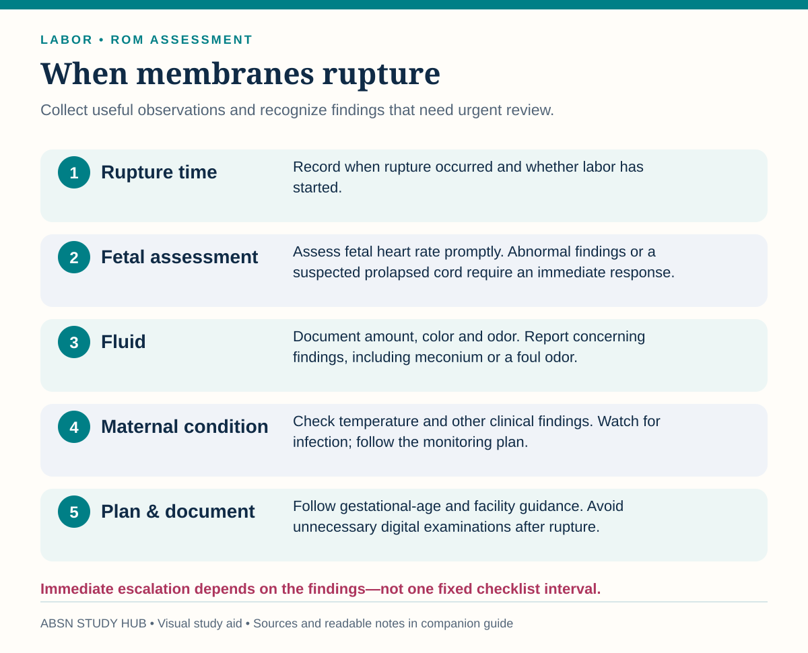

PROM and AROM, what oxytocin can do to a uterus, and the difference between forceps and a vacuum — including which newborn injury goes with which.
The moment the membranes rupture — however they rupture — the first thing you assess is the fetal heart rate. Not the fluid, not the clock. Fetal heart rate first.
The cord can wash down with the fluid. A sudden deep variable or prolonged deceleration right after rupture is cord prolapse until proven otherwise.
Every one of these terms answers only two questions: did labor start yet, and how many weeks is she.
| Term | What it means | Why it matters |
|---|---|---|
| SROM | Spontaneous rupture — it broke on its own | Normal in labor |
| AROM | Artificial rupture — the provider does it (amniotomy) | Needs an engaged presenting part first |
| PROM | Rupture before labor starts, at term | Infection clock starts |
| PPROM | Rupture before labor and before 37 weeks | Prematurity and infection |
Time, Amount, Color, Odor.
Then take her temperature every 2 hours and limit vaginal exams. Fever, maternal or fetal tachycardia, uterine tenderness and foul fluid together are chorioamnionitis.

Sources checked October 3, 2026:
Do not push a visible cord back in, and do not take your hand away once it is holding the presenting part up. You go to the operating room like that.
Oxytocin makes the uterus contract. That is the whole benefit and the whole danger, because the placenta is perfused between contractions.
Recognize it: more than five contractions in ten minutes, or contractions that will not let the uterus relax.
| Order | Action | Why |
|---|---|---|
| 1 | Stop the oxytocin | Removes the cause |
| 2 | Turn her to her side | Off the vena cava |
| 3 | Open the mainline — fluid bolus | Fills the circulation |
| 4 | Oxygen by non-rebreather | Raises what is available |
| 5 | Notify; expect terbutaline | Relaxes the uterus |
Water intoxication is the other oxytocin risk on a long induction — watch for headache, confusion and a falling sodium.
Both need the same five things first: fully dilated cervix, ruptured membranes, an engaged head, an empty bladder, and adequate anesthesia.
| Forceps | Vacuum | |
|---|---|---|
| Applied to | Sides of the head | Top of the head |
| Newborn injury | Facial bruising, facial nerve palsy | Cephalohematoma, scalp lacerations, subgaleal bleed |
| Mother’s risk | Higher — lacerations | Lower |
| Time limit | Provider judgment | Yes — and pop-offs are counted |
After either: check the newborn’s head and face, and check the mother for a fourth-degree laceration and a full bladder.
| Postpartum half | Surgical half |
|---|---|
| Fundus firm and midline | Incision: clean, dry, approximated |
| Lochia amount and clots | Pain control so she can move |
| Bladder emptying after the catheter comes out | Early ambulation, leg exercises — VTE risk |
| Bonding and feeding support | Breath sounds, incentive spirometry |
A cesarean does not protect against hemorrhage. Assess the fundus the same way — gently, supporting the incision.